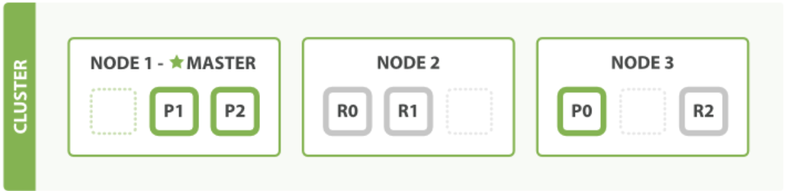
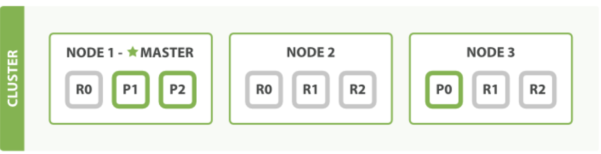

水平扩容
怎样为我们的正在增长中的应用程序按需扩容呢？ 当启动了第三个节点，我们的集群将会看起来 如Figure 4, “拥有三个节点的集群——为了分散负载而对分片进行重新分配”所示。
Figure 4. 拥有三个节点的集群——为了分散负载而对分片进行重新分配

Node 1 和 Node 2 上各有一个分片被迁移到了新的 Node 3 节点，现在每个节点上都拥有2个分片，而不是之前的3个。 这表示每个节点的硬件资源（CPU, RAM, I/O）将被更少的分片所共享，每个分片的性能将会得到提升。
分片是一个功能完整的搜索引擎，它拥有使用一个节点上的所有资源的能力。 我们这个拥有6个分片（3个主分片和3个副本分片）的索引可以最大扩容到6个节点， 每个节点上存在一个分片，并且每个分片拥有所在节点的全部资源。
更多的扩容
但是如果我们想要扩容超过6个节点怎么办呢？
主分片的数目在索引创建时就已经确定了下来。实际上，这个数目定义了这个索引能够 存储 的最大数据量。 （实际大小取决于你的数据、硬件和使用场景。） 但是，读操作——搜索和返回数据——可以同时被主分片 或 副本分片所处理，所以当你拥有越多的副本分片时，也将拥有越高的吞吐量。
在运行中的集群上是可以动态调整副本分片数目的，我们可以按需伸缩集群。 让我们把副本数从默认的 1 增加到 2 ：
PUT /blogs/_settings
{
"index.number_of_replicas" : 2
}
如Figure 5, “将参数 number_of_replicas 调大到 2”所示， blogs 索引现在拥有9个分片：3个主分片和6个副本分片。 这意味着我们可以将集群扩容到9个节点， 每个节点上一个分片。相比原来3个节点时，集群搜索性能可以提升 3 倍。
Figure 5. 将参数 number_of_replicas 调大到 2

注意
当然，如果只是在相同节点数目的集群上增加更多的副本分片并不能提高性能，因为每个分片从节点上获得的资源会变少。 你需要增加更多的硬件资源来提升吞吐量。 但是更多的副本分片数提高了数据冗余量：按照上面的节点配置，我们可以在失去2个节点的情况下不丢失任何数据。